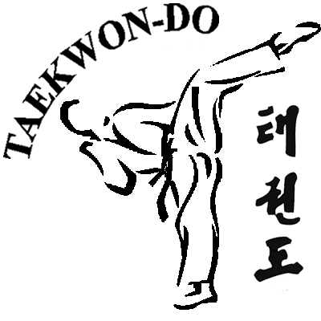

What is the T.A.G.B.
The founder Major General Choi Hong Hi,who passed away on 15 th June 2002 , 9th Degree Black Belt, inaugurated Tae Kwon-Do in Seoul, South Korea on April 11th 1955 following extensive research and development and introduced into the United Kingdom in 1967.
The Tae Kwon Do Association of Great Britain (TAGB) is the nationally recognised governing body of Tae Kwon Do in this country. It was formed in August 1983 and has since become the founding member of the British Tae Kwon Do Council (BTC) which is recognised by the United Kingdom Sports Council.
The TAGB practices tae kwon-do deriving from the Chang Hun style,one of the earliest types originated and developed by Major General Choi Hong Hi
On the 21st of April 1988 a new governing body for Tae Kwon-Do was formed called the British Tae Kwon-Do Council (B.T.C.), this now incorporates 11 different organisations and is the only body recognised by the United Kingdom Sports Council. The T.A.G.B. is a founder member and is also at present the largest organisation in the B.T.C. Current membership of the B.T.C. is over 24,000.
The T.A.G.B. is a member of Tae Kwon-Do International, which is a world-wide body with representation in every continent of the globe. Tae Kwon-Do International was inaugurated on November 13th 1993.
TAGB instructors are highly qualified, accredited individuals with many years' experience in teaching mixed classes which often include young children and disability groups. Training in Tae Kwon Do can start at any age. TAGB members start as young as five and recently one of our members gained his fifth dan black belt on his 70th birtday!
Because of its high-kicking, fast-paced style Tae Kwon Do is a thoroughly modern way of getting fit. The TAGB is a great advocate of fun and fitness at an early age and TAGB instructors often work with local schools to teach self-defence. As the largest martial arts organisation in the world the TAGB has 20,000 accredited, members and organises seminars, demonstrations, competitions and national and international championships every month of the year. It also publishes a bi-monthly, glossy, subscription magazine called TAGB Times which carries club news, contact addresses, modern training techniques and events.
Tae Kwon Do training is about learning to discipline your mind as well as your body and TAGB instructors always include elements in their teaching which help their students to develop mentally as well as physically.
With clubs throughout the country the TAGB is the ideal organisation for learning a martial art that has evolved through a 3,000 year history to become the newest Olympic sport.
Tae Kwon Do History 
Tae Kwon Do is a martial art developed over 20 centuries ago in Korea. The earliest records of its practice date back to 50BC where tomb paintings show men in fighting stances practising forms known as Taek Kyon. It is believed that the origins of Taek Kyon date even further back and originated as self-defence against wild animals whose defensive and offensive movements were also the subject of much analysis. Taek Kyon, at the time was only one style of fighting. Others had names such as Subak, Tak Kyon and so on.
By 57 BC Korea had three kingdoms (Koguryo, Paekje and Silla) and, with a certain degree of inevitability, a strong rivalry amongst them led to the focus on the development of very effective fighting techniques. History, repeatedly, has shown that it is the victor who writes the script and this case was no exception. Silla won its wars against its two rivals and in 668 AD it unified the three kingdoms. Instrumental in its victory were the Hwa Rang Do, an elite group of young men who were devoted to cultivating their bodies and minds and serving the kingdom. Hwa Rang Do, quite literally, means flowering youth (Hwa=flower, Rang=young man) and the young noblemen of the Hwa Rang Do practised various forms of martial arts. The Hwa Rang Do also developed an honour code and it is this which today forms the philosophical background of Tae Kwon Do.
In 936AD the Silla dynasty came to an end and with it the kingdom. In its place, Wang Kon founded the Koryo dynasty. Koryo is an abbreviation of Koguryo which Wang Kon sought to revive. The modern name Korea is derived directly from the word Koryo. It was during the Koryo that a new sport was given form. It was called Soo Bakh Do and it was used, principally, as a military training method. Drawing from the many different forms of martial arts which had preceded it Soo Bakh Do used bare hands and feet as a weapon and its intensity was such that it was seen as a very good way of maintaining one's strength and overall fitness. As a result its popularity spread throughout the kingdom of Koryo.
This was the precursor to modern day Tae Kwon Do. Despite its effectiveness as a means of training for warfare however and its popularity with the peasants in the fields by 1492 it had almost disappeared. What happened was that King Taejo, founder of the Yi dynasty, replaced Buddhism with Confucianism as the state religion. The teachings of Confucius, imported from the refined, rarefied culture of China, dictated that the higher class of man should read poetry and music and the practice of martial arts should be something left to the less refined, even inferior, man.The Yi dynasty lasted from 1392 to 1910 and during that time the practice of martial arts and the code of honour of the Hwa Rang remained alive in isolated, stubbornly traditional cultural backwaters of Korea.
In 1910 however Korea was invaded by Japan who dominated it until the end of World War II. The Japanese tried to erase all of the Korean culture including its martial arts. As is usual with such situations this brought a stubborn resurgence in the practice of martial arts which now, once more, had a very practical role to play against an invader who strictly controlled the supply of weapons.
Along with occupation, the Japanese also brought karate with them and indeed the quick, straight-line movements which characterise many Tae Kwon Do moves today are a direct result of the legacy left behind by the Japanese army of occupation. After the end of World War II, when Korea became independent, several Kwans, or fighting styles, arose. These were: Chung Do Kwan, Moo Duk Kwan, Yun Moo Kwan, Chang Moo Kwan, Oh Do Kwan, Ji Do Kwan, Chi Do Kwan and Song Moo Kwan. All these Kwans were united in 1955 under the name of Tae Soo Do.
Korea's struggle to re-discover its identity and many traditions was, with some degree of inevitability, reflected in the subsequent development of its martial arts movement and by the beginning of 1957 several Korean martial arts masters had adopted the name Tae Kwon Do for their form of martial arts, because of its similarity to Tae Kyon. The very first Tae Kwon Do students were soldiers because General Choi Hong-Hi, who is credited as the father of modern Tae Kwon Do, required his soldiers to train in it.
The police and air force had to train in Tae Kwon Do as well. At the time Tae Kwon Do was still very heavily under the influence of Japanese karate and, indeed, many of its moves and style bore a very close resemblance to Shotokan Karate. In 1961, however, the Korean Tae Kwon Do Union arose from the Soo Bakh Do Association and the Tae Soo Do Association. In 1962 the Korean Amateur Sports Association acknowledged the Korean Tae Kwon Do Union and in 1965 the name was set to Korean Tae Kwon Do Association (KTA).
General Choi Hong-Hi was president of the KTA at the time and he was asked to start the International Tae Kwon Do Federation (ITF) as the international branch of the KTA. What follows next is best described as the rise of the acronyms. In 1961, following the overthrow of the southern government of Korea general Choi left for the United States where he established the ITF as a separate entity, in 1963. Tae Kwon Do was introduced in the UK in 1967, just four years after the foundation of ITF. Six years later the World Tae Kwon Do Federation (WTF) was founded and in 1980 it was recognised by the International Olympic Comite (IOC) which made it a demonstration sport in the Olympic Games.
The Korea Tae Kwon Do Association (KTA) is the National Governing Body (NGB) for Tae Kwon Do in the Republic of Korea, just like the United States Tae Kwon Do Union (USTU) is the NGB for Tae Kwon Do in the United States. The World Tae Kwon Do Federation (WTF) is made up of Tae Kwon Do NGBs. These NGBs are member organisations of the WTF. Individuals can be affiliated to the WTF through their NGBs but cannot join the WTF directly! As the popularity of Tae Kwon Do increased in the west several attempts were made to unite the two Tae Kwon Do organisations but these were unsuccessful. It was largely because of all this that in August 1983 it was decided to form, in the UK, an organisation that would be run on principals far more democratic than were permitted by the two governing bodies of the time (the ITF and WTF). This became the basis of the Tae Kwon Do Association of Great Britain (TAGB).